Pipettor Teaching, Automatic (All Modules)
Prerequisites

|
Note—If a Fusion is installed the Reagent Pipettor teaching to the Elution Track MUST be completed. |
|
|
Note— Before starting this Teaching procedure, please save the following files *.coo files found in C:\Panther\Software\PC\Data Panther: Coordinate.coo
|
Procedure
 Click the Teach All Automatic button.
Click the Teach All Automatic button.
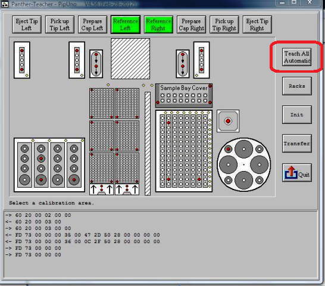
An Instruction dialog appears.
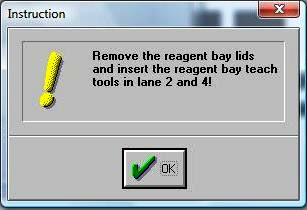
- Remove the Reagent Bay lids, insert the Reagent Bay teach tools in lanes 2 and 4, and click OK.An Instruction dialog appears.
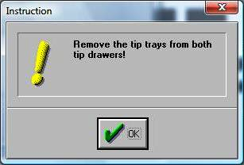
- Remove the Tip Trays from both Tip Drawers and click OK.An Instruction dialog appears.
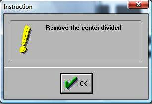
- Remove the center divider and click OK.An Instruction dialog appears.
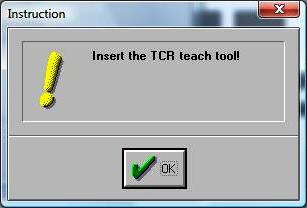
- Insert the TCR Target capture reagent—An assay-specific reagent added as part of specimen pipetting. teach tool and click OK.
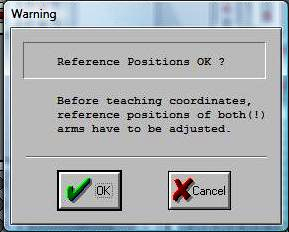
- Click OK.
- Place an auto-teach cap on the left Pipettor probe and click OK.An Instruction dialog appears.
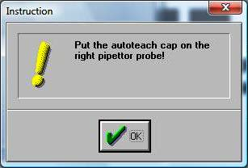
- Place an auto-teach cap on the right Pipettor probe and click OK.
- Allow the Teacher software to complete the process. This takes approximately 20 minutes.An Information dialog appears when the auto-teaching process is complete.
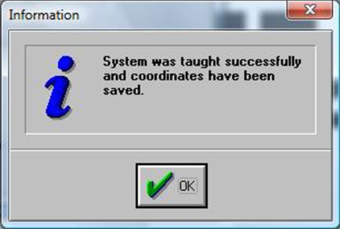
- Click OK.An Instruction dialog appears.
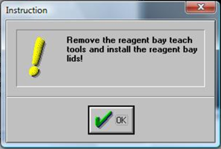
- Remove the Reagent Bay teach tools, install the Reagent Bay lids, and click OK.An Instruction dialog appears.
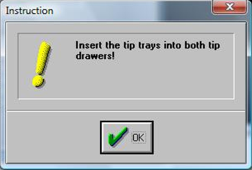
- Insert the Tip Trays into both Tip Drawers and click OK.An Instruction dialog appears.
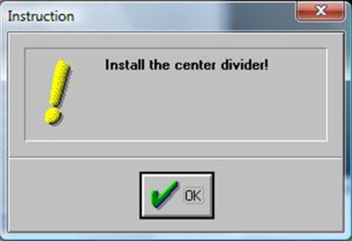
- Insert the center divider and click OK.An Instruction dialog appears.
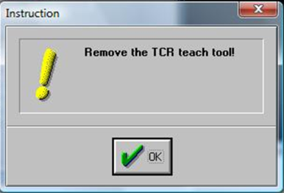
- Remove the TCR teach tool and click OK.
- Click the Transfer button.
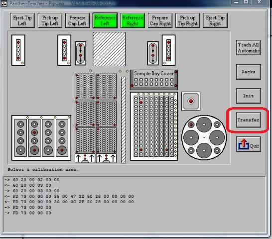
- Click the Quit button and press Cancel to complete the procedure.
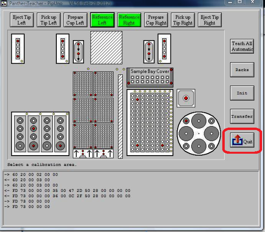
- If any errors occur during the process, complete the following steps:
- Select the Init Button to initialize all affected modules.
- Teach the Pipettor to the individual affected module(s), either manually or automatically.
- If individual teaching was successful, select the Transfer Button to save the new coordinates.
- Perform a Teach All Automatic procedure.
- If this is an install, continue to Load Service Software Customer Parameters.
 button at the top of the page to send feedback, comments, or change requests.
button at the top of the page to send feedback, comments, or change requests.